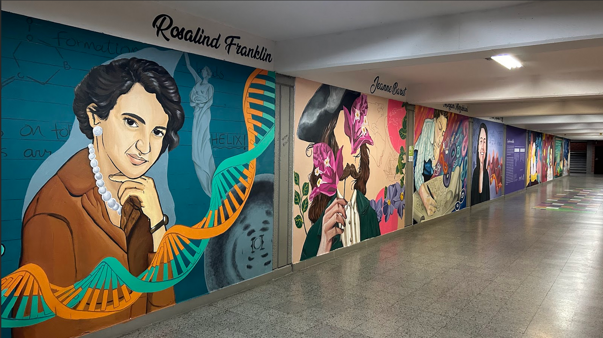
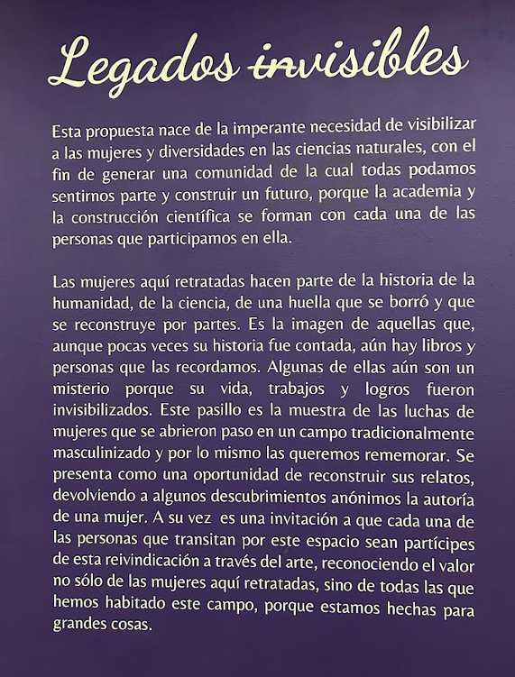

Legados Invisibles
Legados Invisibles is a project carried out jointly by the feminist collective FEMCEN, of which I am a member, and the artistic collective Biografos from Medellín. Its goal was to create an artistic intervention in the hallway of the Institute of Physics at the Universidad de Antioquia (Medellin, Colombia), painting eight murals of women scientists from different fields— biology/microbiology, mathematics, physics/astrophysics, and chemistry. With this intervention, we seek to make visible the contributions that women scientists have made throughout history and to inspire new generations.



Central mural

Invisible legacies
This proposal arises from the urgent need to make women and diverse identities visible
in the natural sciences, with the aim of creating a community in which all of us can
feel we belong and build a future, because academia and scientific work are shaped by
each one of the people who take part in them.
The women portrayed here are part of the history of humanity, of science, of a trace
that was erased and is now being pieced back together. They are the image of those
whose stories have rarely been told, yet who still live on in books and in the memories
of people. Some of them remain a mystery because their lives, work, and achievements
were made invisible. This hallway is a testament to the struggles of women who carved
out a place for themselves in a traditionally masculinized field, and for that reason
we wish to remember them. It is an opportunity to reconstruct their stories, restoring
to some anonymous discoveries the authorship of a woman. At the same time, it is an
invitation for every person who walks through this space to take part in this act of
reclaiming through art, recognizing the value not only of the women portrayed here,
but of all of us who have inhabited this field, because we are made for great things.